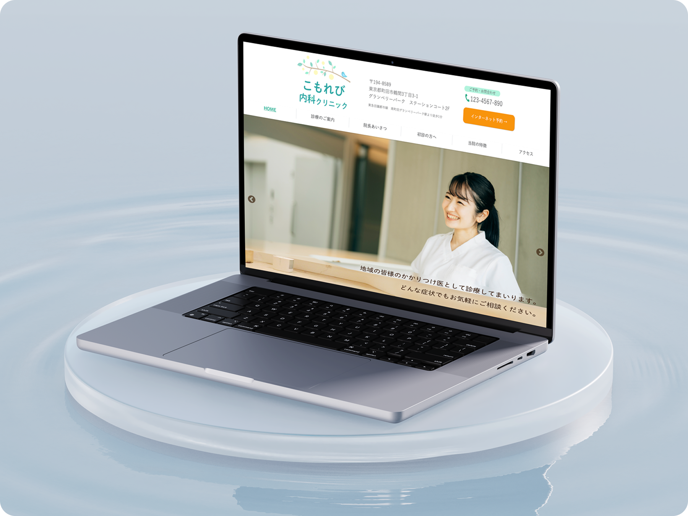

WORKS
制作したもの

My Portfolio
自身の名前にちなんだ「海」をテーマにした、 ポートフォリオサイトを制作しました。
自主制作 (direction/design/coding)


WORKS
制作したもの
当サイトに掲載されている作品は、
すべて架空のプロジェクトを想定して制作したものです。
実案件ではありませんが、ターゲットや課題等を想定し、
実際の案件を意識したデザイン・構成を考えています。
-
web site
宵 / 照明専門店
( direction / design / coding ) -
web site
My Portfolio / 当サイト
( direction / design / coding ) -
web site
Rosalie / フラワーショップ
( direction / design / coding ) -
web site
こもれび内科クリニック / 病院
( direction / design / coding ) -
web site

好食冰 / 台湾かき氷店
( direction / design / coding ) -
banner
販促バナー / チョコレート
( design ) -
banner

販促バナー / シャンプー
( design ) -
banner

婚活アプリバナー
( direction / design )
ABOUT
私について
平山 海友
1995年10月生まれ、岩手県出身。
成蹊大学在学中から大手フラワーショップにて6年間勤務。
その後、会計事務所へ転職するも、クリエイティブな仕事への関心が尽きず、
Webデザイナーを志すことを決意。
美しさと機能性を両立させた、課題解決に繋がるデザインを目指しています。
SKILL
できること
web design
Webサイトやバナー、簡単なアイコンやイラストのデザインができます。 まずは目的や課題をしっかり分析し、それらを解決するためのデザインを心掛けています。
使用ツール： Illustrator / Photoshop / Figma
coding
HTML/CSS/Javascriptを駆使して、デザインカンプ通りにコーディングできます。 規則性を意識した記述を意識し、メンテナンス性を高めることを大切にしています。
使用する技術： HTML / CSS / Javascript